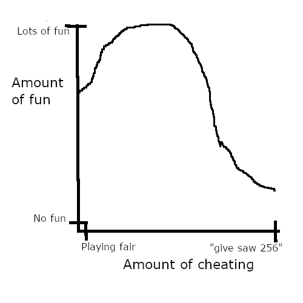
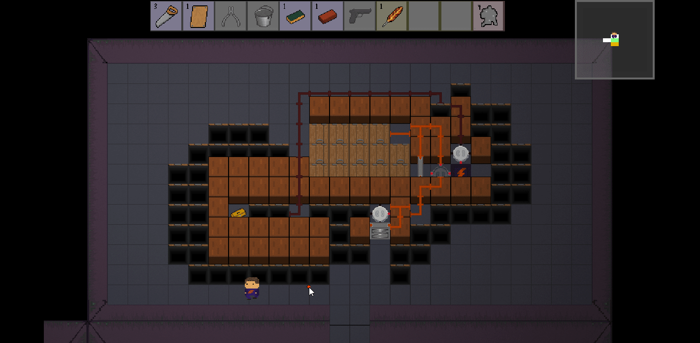
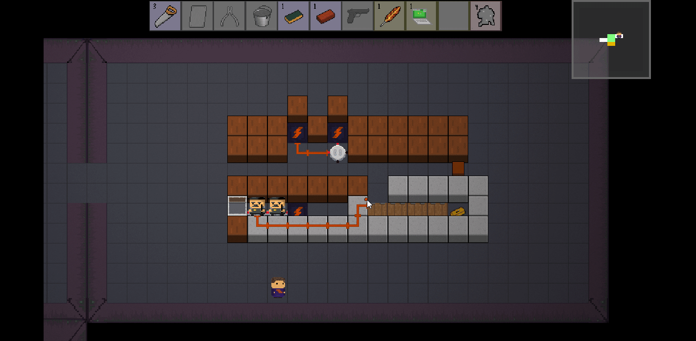

Last October, the Herman Electro dev team took Herman to Playcrafting’s Halloween Expo in order to get some feedback. (By the way, we’ll be there again this year, come check us out: link.) Our demo was running smoothly, and the event was going really well. Then, an eleven year old boy whom I will call Gio showed up. Gio was fairly excited to solve puzzles, but he also gave up on puzzles quickly. After one particularly frustrating puzzle, Gio mashed the keyboard, and a weird gray box appeared. While setting up the demo, we had accidentally forgotten to disable the developer console. Once Gio had pressed ’~’, I had to explain what exactly he had opened. Luckily, Gio was super excited to learn about this behind-the-scenes tool, and so I showed him a sample command.

After discovering "give saw", Gio was engrossed with finding out all the other different commands he could use. After trying "give wirecutters", "give WireCutters", and "give WIRECUTTERs", he figured out that "give wireCutters" would spawn in free wire cutters. After that, Gio proceeded to figure out our secret coded names for all of our basic tools. When that wasn’t enough, he started guessing tool names until he had given himself the secret supertools "bomb", "axe", and "missile". In short, Gio was willing to put more effort into cheating to win than he was willing to put into winning the normal way.
The key lesson here is that cheating in games is fun. Not only does cheating relieve the stress involved with playing a game, it also can require just as much effort as playing the game itself. Now, it is obviously infeasible to just give players access to the developer console at all times. However, it is totally reasonable to have built in "cheat strategies" to obtain similar results. The end goal of the designer is to put the game at the very top of the "cheating/fun" chart.
Weak Cheat Strategies
One of the easiest ways to add a cheat strategy to your game is simply to allow for a way to win that requires little thought but is also fairly weak. The simplest example of this is "spamming" a single attack in a fighting game. In Super Smash Bros., you will never be able to win in the professional scene if all you do is play as Mario, stand still at the edge of the screen, and shoot fireballs over and over again. However, if you are playing with friends, you will probably be able to do a decent amount of damage doing just that.
This may fairly different from using a developer console, but the principle is the same. The player is utilizing a strategy which completely bypasses needing to use skill to win. This strategy allows players to win the game without having to play the game. However, the reason that not everybody uses this strategy is because it is weaker than playing the game the normal way. Including weak cheat strategies such as this can give players a chance to "cheat" without throwing off overall game balance.
In Herman, we implement a weak cheat strategy by allowing for "overcosted" solutions. Instead of actually beating this puzzle the clever way (which uses 2 saws), players can spend an extra ladder to go for a really easy, direct path to the goal. Blindly cutting through rooms, just like spamming an attack, requires very little thought. However, using this strategy is objectively worse than just beating the room as it costs more tools.
Rare Cheat Strategies
The other main way that games add cheat strategies is by only giving players access to them infrequently. One example of this kind of strategy is the smash brawl in Super Smash Bros. This is a ball that floats around the stage every once in a while, and when a player breaks it they get to use a special attack which often instantly wins the fight.
When somebody destroys the smash ball, they get access to an attack which completely throws off game balance. Using a final smash completely bypasses normal gameplay and lets whoever use it essentially win. Again, a final smash lets players win without playing the game.
Unlike weak cheat strategies, rare cheat strategies often are much stronger than normal gameplay. The only thing keeping them from dominating the game is their rarity. This lets the Gios of this world get to feel really cool and break the game without cheat strategies becoming too oppresive.

In Herman Electro, rare cheat strategies appear in the form of certain supertools. As I said at the beginning of this column, Gio figured out how to give himself a few of our secret supertools. However, some of these supertools are so powerful that they instantly beat any puzzle. One example of these is the room reroller, which not only beats any puzzle but also turns some of the walls into treasure. However, the room reroller is extremely rare, and is only attainable by spending around 7 tools. Thus, this is a rare cheat strategy as it does bypass the rules of the game, but can only happen every so often.
Bad Cheat Strategies
However, not all cheat strategies that are rare or weak improve the game. One of the first supertools in Herman was the laptop, which when used, revealed the possible solutions to the room. However, nobody ever used the laptop even if they had 10 of them. This was because everybody wanted to figure out the solution themselves. On the surface, laptop seemed to fit into the category of a rare cheat strategy. It does bypass the fact that players have to figure out the solution. However, all laptop really does is allow players to skip the fun part of solving a puzzle without gaining any value in return. Cheat strategies shouldn’t just bypass the rules of the game, they should do so in a way that feels cool in and of itself. People still want to play the game, they just also want to feel powerful. Cheats that allow players to not play the game and also don’t let them feel powerful are entirely pointless. Thus, laptop was removed.
Cheat strategies are a great way to view this aspect of game design, and I hope you learned something from this column. Feel free to share any thoughts on cheating in video games. I’ll see you next week.
_________
If you have any questions or comments, feel free to email us at hermanelectrogame@gmail.com. You can follow our progress and see more posts and gifs on our Twitter account, @HermanElectro.